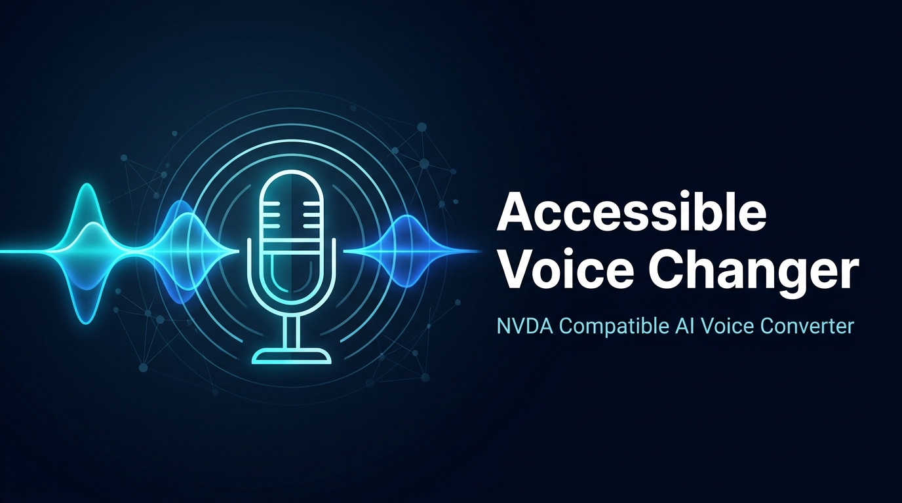

v1.0.2 • %100 NVDA Uyumlu • 25 Dil
Erişilebilir Ses Değiştirici (RVC AI)
Görme engelli bireyler başta olmak üzere tüm kullanıcılar için sıfırdan tasarlanmış; tam klavye ve ekran okuyucu (NVDA) uyumlu, gerçek zamanlı yapay zeka ses dönüştürücü, model eğitim sihirbazı ve Demucs şarkı ayırıcı.

Öne Çıkan Özellikler
Klavye Kısayolları
| Tuş | İşlev |
|---|